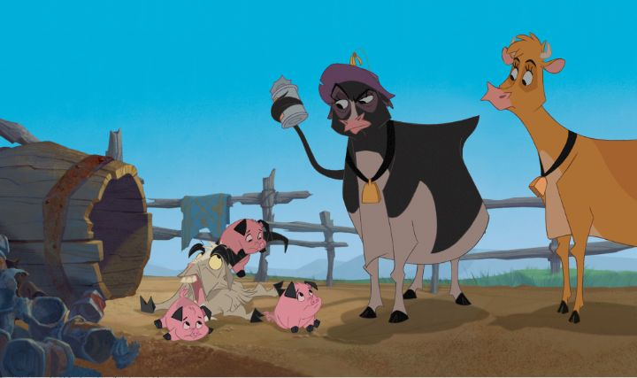

Disney's business plan since the "Renaissance" of the 1990's was ambitious: they vowed to release a new animated feature every single year, keeping the brand fresh in people's minds. It was a matter of time before they got a dud. That came in the form of "Home on the Range" in 2004, the one that most people agree is among the worst, if not THE worst, of the animated movies in Disney's catalog. So bad that it nearly killed the 2D animation team. The biggest problem with "Range" is the lack of inspiration. The quality of Disney's features at the time ranged from fantastic to middling, but they all had a certain spark in their stories. "Range" doesn't. Originally pitched as an ode to Westerns more than a decade earlier, the story was re-worked and shifted hands repeatedly, until it had little resemblance to the original pitch. The best word for it was that the ideas were "salvaged" for the sake of releasing something, anything, to continue the annual-movie promise and to give children something to watch while their parents walked around the shopping mall. The production budget was higher than most of Disney's other movies, for what looks like the lowest-quality standard yet from Disney, probably exclusively because of that long pre-production period. On the positive side, this is a mostly harmless Western that could introduce the genre to children. In the old West, there's a cattle rustler ("Alameda Slim") stealing massive heards of cows and steers in the middle of the night, vanishing without a trace. In one such instance, Maggie is the only cow remaining, and her heart-broken farmer has to sell what's left of the land and livestock. Maggie finds her new home on "Patch of Heaven," run by a sweet old farmer named Pearl, running a humble but happy home where all her animals are family. Maggie's loud and crude personality clashes with the two original cows, the dim but zen-like Grace and stern Mrs. Calloway. But Pearl is quickly given bankrupcy papers of her own, due to auction off her land and livestock in a few days if she can't pay the money owed. Maggie offers a few ideas, leading them to the plan to catch Slim themselves and collect the bounty. After all, who better to catch a cow thief than cows? The story is a pleasant enough diversion for young children. It's fun to see these unlikely bounty hunters get caught up in the human world. All the characters have a larger-than-life persona to keep your attention. Slim is a large man who, it's revealed, steels cows by hypnotizing them with yodeling, not unlike the Pied Pipper of Hamlet, but he has a temper and the poor luck of bumbling henchmen. The Sheriff's horse, Buck, fantasizes about being an action horse to a real bounty hunter, and couldn't care less about the cows' plight, so he seeks to hunt down Slim himself for the glory of being a hero. There are other colorful characters, like the other animals on the farm, or the peg-legged jackrabbit. They're all animated energeticly, and given solid voices by a strong voice cast that includes Roseanne Barr, Jennifer Tilly, Cuba Gooding Jr., Steve Buscemi, and even Judi Dench. Some of those actors were right for the movie, but Dench deserved so much better than to be locked to this one role in Disney's lore.  In terms of comedy, "Range" is similar in tone to "The Emperor's New Groove," but not nearly as fast or as clever. A lot of those jokes also revolve around some crude references to cows, like an early line about Maggie's utters ("yep, they're real, quit starring"). A couple of steers flirt a little too strong with the lead cows (including what modern audiences would call sexual harassment), and it was annoying to see them return multiple times. This was one of the very few Disney animations to get a PG rating for the crudeness. While some of those jokes work fine (Grace's easy-going personality was a frequent highlight, as was Slim's temper scenes), most others just made my eyes roll (like most of the stuff Buck says). The story tries to add a little heart to make us care, and that works fine, but feels like an after-thought and bare minimum to hold the movie together.Interestingly, the action set pieces might be one of the better elements. We watch a horse race across the desert while fighting kung-fu. We see cows do a high-kick. We get the mine-cart chase trope, but also an exciting runaway train. You can do anything with cartoons, but it's kinda fun to see how these semi-realistic cows manage to stop the bad guys and save the day, despite having no opposable thumbs and not speaking English. The visuals are also similar to "New Groove," but perhaps a slight step down, with very plain backgrounds and character designs. The movie really feels like a television production instead of a proper theatrical film. At least the animation is smooth, giving a hint that this is in fact a Disney production. There aren't too many songs, but the few that are there are catchy and performed by notable country singers. It's harder than it looks to make a good Western. The better examples of the genre rely on strong characters and high stakes and dramatic climaxes. Technically, "Home on the Range" has those elements, but falls flat on its face compared to its peers. It's fun enough, but is one of the only story-driven Disney movies that I'd say is truly skippable.
- "Ani" More reviews can be found at : https://2danicritic.github.io/ Previous review: review_Himouto!_Umaru-Chan Next review: review_Howl's_Moving_Castle